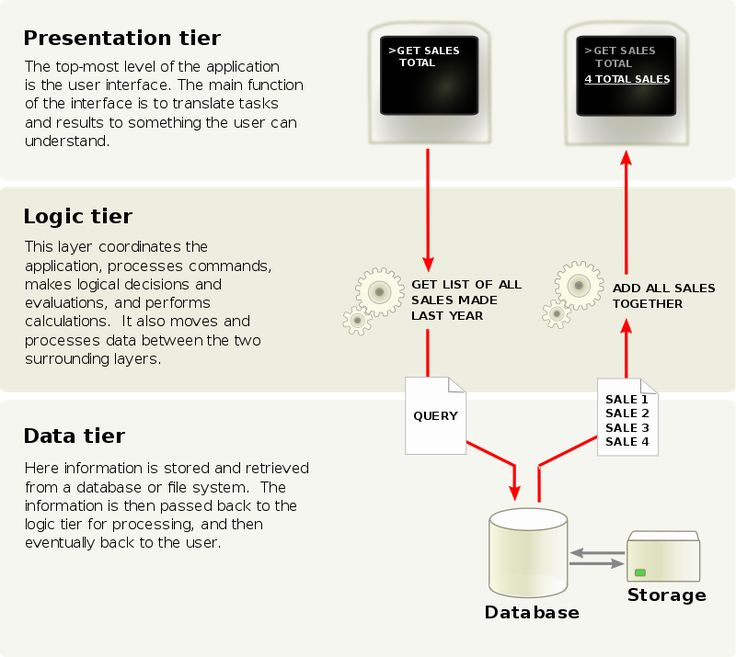

Multitier Architecture
Category: System Architecture
Multitier architecture is a software design approach that divides an application into separate layers, typically including presentation, application logic, and data storage.
Each layer performs a specific role, which improves system organization, scalability, and maintainability. For example, the presentation layer handles user interaction, while the data layer manages storage.
This architecture is commonly used in web applications and works closely with web servers to process user requests efficiently.

Figure: Multitier architecture showing layered system structure
← Previous: Extranet | Next: FTP →